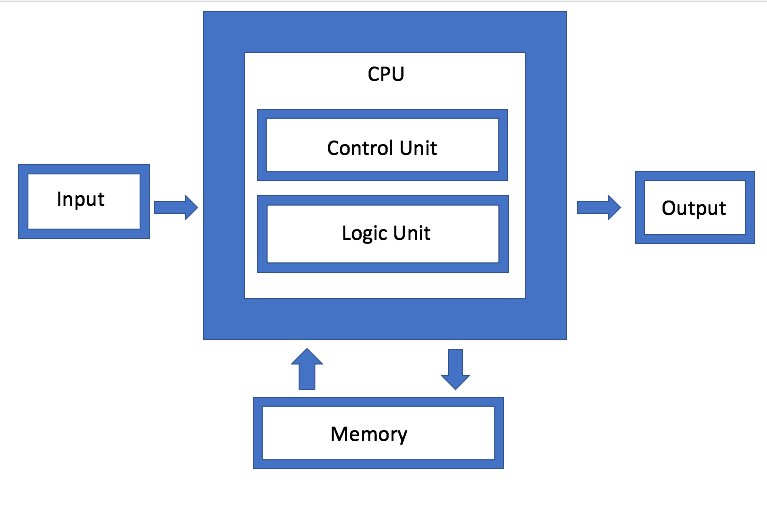

De kern van iedere computer bestaat uit de de processor, ofwel de CPU, die het hele systeem bestuurt. Miljarden transistors binnen in de processor zorgen ervoor dat er logische functies gebouwd kunnen worden.
In sommige computers kan het nog wel eens voorkomen dat er meerdere processoren aanwezig zijn. Dit wordt ook wel een multiprocessor system genoemd.
Wanneer een laptop of smartphone uit maar één processor bestaat kan het zo zijn dat deze processor is opgebouwd uit meerdere ‘kernen'. Dit wordt dan een multicore processor. Deze kernen kunnen apart van elkaar instructies verwerken, waardoor de computer meerdere taken tegelijk kan uitvoeren.
De CPU is zowel verantwoordelijk voor de besturing en voor het uitvoeren van berekeningen. De CPU bestaat uit twee onderdelen:
- het besturingsorgaan (CU)
- het rekenorgaan (ALU)
Onder de taken van de CPU vallen de volgende dingen:
- Het ophalen van instructies en gegevens uit het RAM
- Het laten uitvoeren van berekeningen door het rekenorgaan
- Het opslaan van resultaten in het computergeheugen
- Het regelen van de uitvoer van gegevens
De snelheid van de CPU wordt bepaald door de verwerkingssnelheid: de hoeveelheid instructies die de CPU in één seconde kan verwerken. Deze snelheid wordt uitgedrukt in mips (millions of instructions per second).
Wil je nou meer leren over de werking van de CPU, klik dan hier en bekijk het filmpje.
Naast de verwerkingssnelheid kent een CPU ook nog een kloksnelheid (uitgedrukt in Hz), die wordt gereguleerd door de klokchip. De klokchip geeft een vast aantal malen per seconde een puls aan de CPU, waardoor synchronisatie ontstaat.
De verwerkingssnelheid ligt altijd lager dan de kloksnelheid, omdat er voor het uitvoeren van een instructie meerdere pulsen van de klokchip nodig zijn.